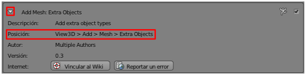
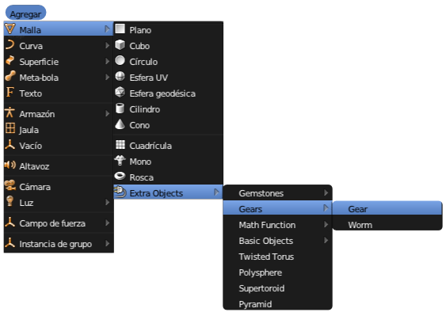
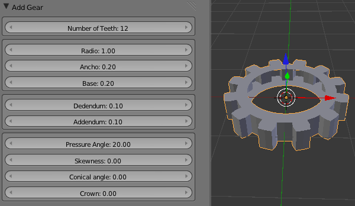
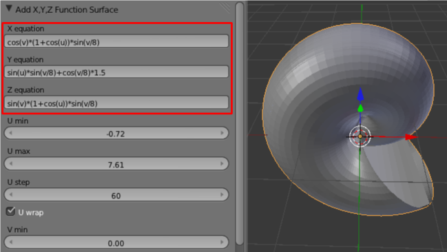

Implementadas
Las extensiones se encuentran en Archivo/Preferencias de usuario en la sección Extensiones clasificados por temas. Cada uno suele contar con una breve descripción además de un enlace a la web donde se habla de su desarrollo o asuntos similares.
Para habilitar uno de elllos basta con activar la casilla correspondiente en la zona de la derecha.
Ya sabemos que esto no supone la decisión se conserve para la próxima vez que ejecutemos Blender porque no se ha ordenado que se guarde como preferencia de usuario. Para eso deberíamos pulsar Guardar como preferencia por defecto pero, mucho cuidado, porque equivale a Archivo/Guardar preferencias de usuario. Esto quiere decir que Blender se arrancará la próxima vez tal y como lo tengamos en ese momento (Vista 3D, disposición de botones...). Así que si queremos habilitar una extensión para siempre lo mejor es hacerlo nada más abrir Blender.
En nuestro caso hemos habilitado Extra Objects. Si accedemos a sus características vemos que nos aparece en el menú Add/Mesh (Añadir/Malla).
De regreso al editor Vista 3D eliminamos el cubo por defecto y sacamos nuestro primer objeto extra (Añadir/Malla/Extra Objects/Gears/Gear).
Por norma general al añadir un nuevo objeto dispondremos de opciones en el cuadro Herramientas ("T"); así que conviene estar atentos.
Son muchos los objetos extras que encontramos en este formidable extensión. Un recorrido por sus posibilidades puede hacer las delicias de los amantes de las matemáticas por ejemplo con Añadir/Malla/Extra Objects/Math Function/XYZ Math Surface donde dar rienda suelta a sus conocimientos más técnicos...
